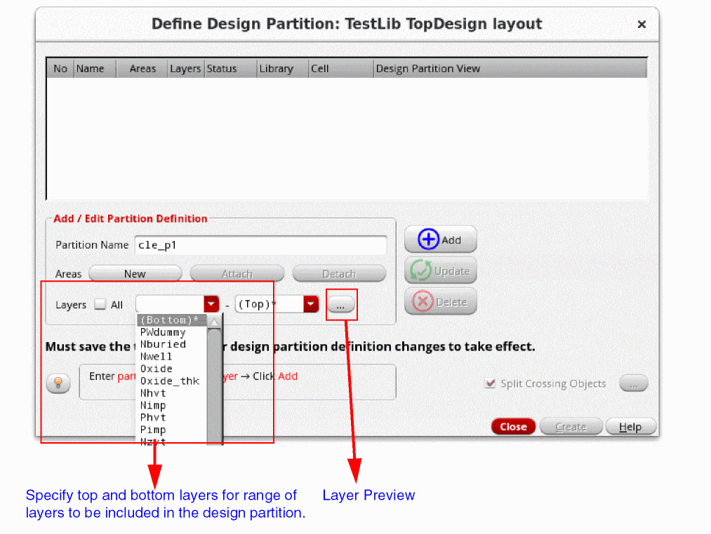
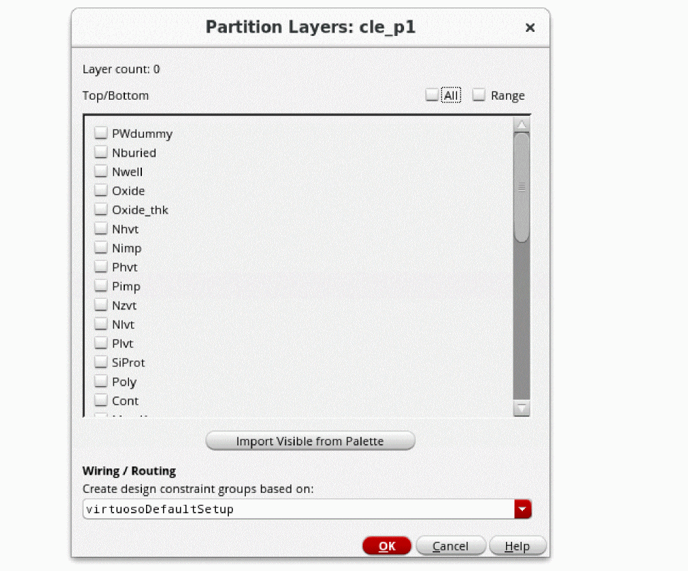
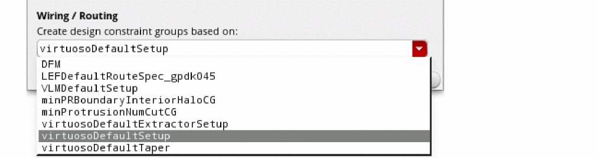
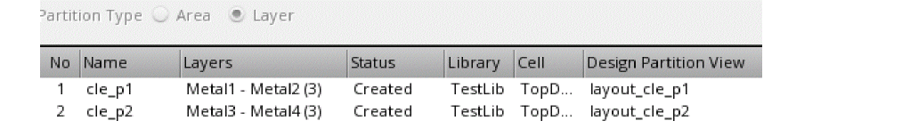
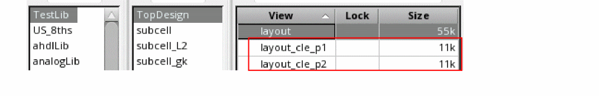

Defining a Layer-Based Design Partition
After a design is initialized, you can start defining layer-based design partitions as follows:
-
Click Define Design Partition on the Concurrent Layout assistant or choose Concurrent – Define Design Partition.
The Define Design Partition form appears. -
(Optional) Specify a name for the new design partition in the Partition Name field. If you do not specify a name, the default name in this field is used. By default, the names of the new design partitions and the corresponding design partition views are
cle_px andlayout_cle_px, where x is a number. -
Click Add to add one or more design partitions.
A design partition with the corresponding design partition view is added.
The status of the new design partitions is Defined. If a design partition view already exists, the status is Reuse. -
(Optional) Select a design partition, specify a different name in the Partition Name field and click Update.
Name of the corresponding design partition view will also change automatically. - Deselect All if you want to specify a range of layers for the layer-based design partition.
-
Specify the top and bottom layers to be included in the design partition in the Layers field.
 -
(Optional) Click Layer Preview to remove certain layers from the layer range or add other visible layers from the Palette.
The Partition Layers form appears. Use this form to:- Preview the layers included in the design partition.
- Clear the check boxes of the layers you do not want to include in the design partition.
-
Click Import Visible from Palette to import additional layers from the Palette. 
-
Select a constraint group from the Create design constraint groups based on drop-down list to rebase a Concurrent Layout constraint group to a different parent constraint group and click OK in the message box that appears.
This option specifies the parent constraint group based on which all the Concurrent Layout constraint groups dedicated to each design partition are created.
-
Click Create.
A message box appears listing the design partitions that will be created. -
Click OK.
- Design partition views are created, and the status Created is displayed in the Defined Design Partition form and the Concurrent Layout assistant.
- The top design is saved.
- Two types of Concurrent Layout constraint groups dedicated to each design partition are created to enable layer constraints. For more details, see Constraint Groups in a Layer-based Design Partition.
-
Click Close to exit the Define Design Partition form.
In the Design Management environment, an additional dialog box is displayed to confirm that new design partition views have been checked into the design management system. -
Open the Library Manager to review the created design partition views and observe the changes.
The created design partition views are of minimum size. This is because only the changes made to the associated design partition are saved in this view.
Related Topics
Generating a Temporary Pin in Designer Mode
Permission Required to Open a Design Partition View
Return to top